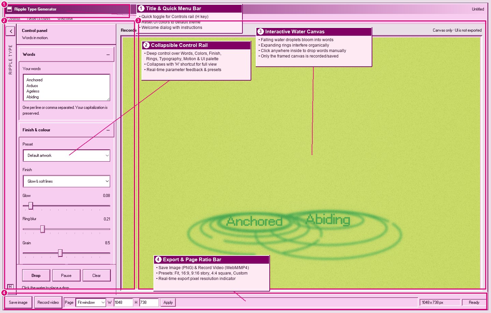
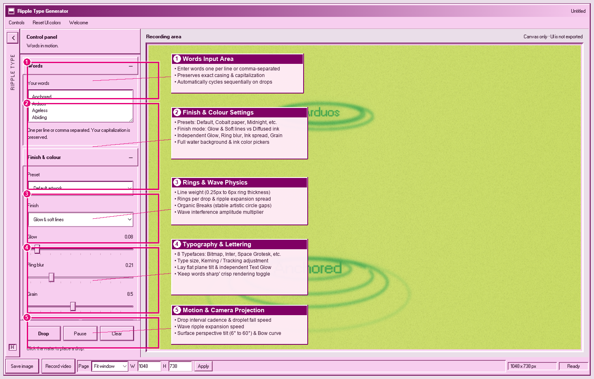
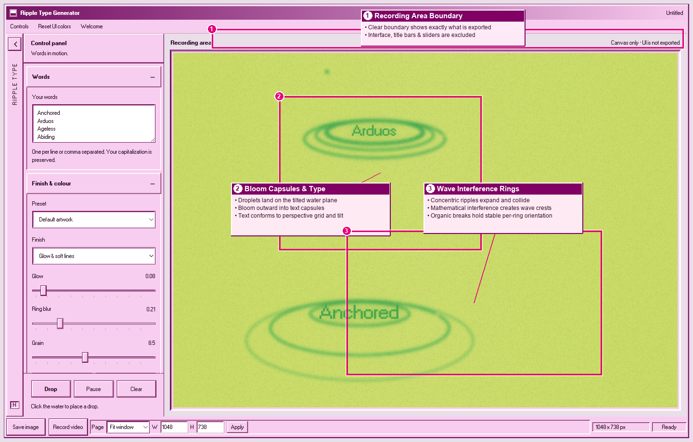
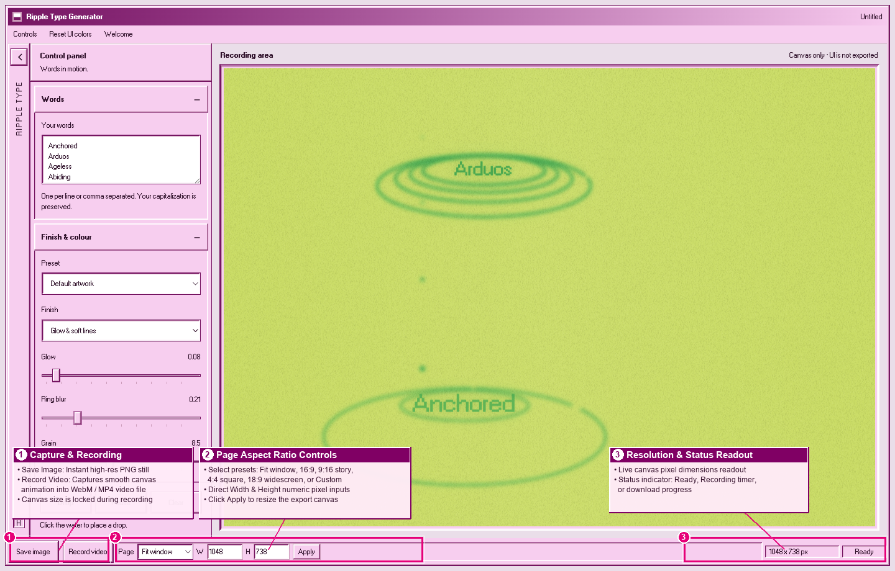
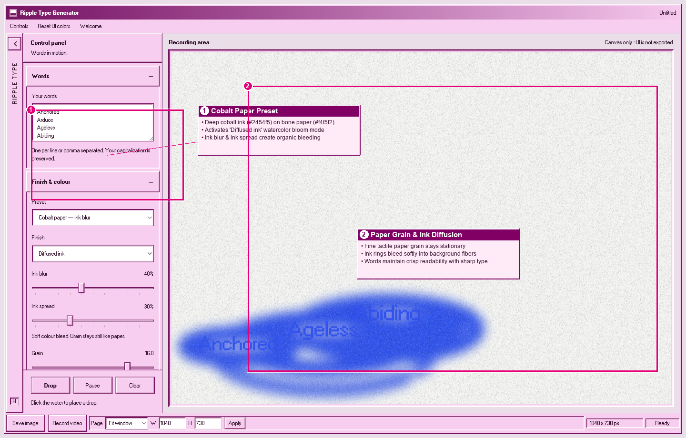
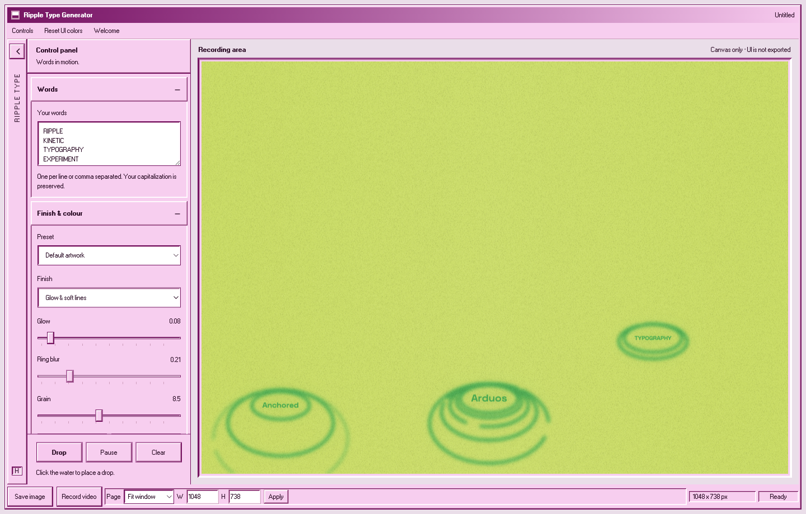

Words fall as droplets onto a tilted sheet of water. Where each one lands it leaves a ring, the ring carries the word, and overlapping rings interfere with each other.
A real 36-second screen recording, 1280×720 at 30fps.
| Time | What is happening |
|---|---|
| 0:00 | Words fall on their own and leave ripples |
| 0:04 | Clicking the canvas drops a word exactly where you click |
| 0:08 | Type size scales the words down, then up |
| 0:14 | Lay flat tips the words onto the water, then stands them straight |
| 0:20 | Surface tilt changes the angle the ripples are seen from |
| 0:26 | Preset swaps the background — Reference blue, Midnight, Rust, Ink on bone |

Control rail, recording area, rail footer and status bar.

Words, Finish & colour, Rings, Typography, Motion & camera.

Only the recording area is exported — the UI never appears in your file.

Save image, Record video, page size and live pixel dimensions.

The Cobalt paper preset, where ink bleeds into the page.

Type size, kerning and Lay flat working together.
| Preset | Water | Ink |
|---|---|---|
| Default artwork | #c5dc4d | #00a943 |
| Reference blue | #5e9de0 | #f0f5fd |
| Cobalt paper — ink blur | #f4f5f2 | #2454f5 |
| Midnight | #0e1930 | #7fa9f0 |
| Ink on bone | #efe7d8 | #1d1c1a |
| Acid | #c9f24a | #152210 |
| Rust | #bf4f2b | #ffe7d4 |
Default artwork also restores every slider, so reach for it to start over. The other six only change colour and finish — which is why the demo sets up the type and tilt first, then flips through backgrounds without losing them.
Finish has two models: Glow & soft lines (exposes Glow and Ring blur) and Diffused ink (exposes Ink blur and Ink spread). Grain adds paper noise, and Water / Ink are free colour pickers.
| Control | What it does |
|---|---|
| Line weight | Thickness of each ring |
| Rings per drop | Concentric rings made by one droplet (1–9) |
| Ripple spread | How far rings travel from the impact point |
| Breaks | Cuts gaps in the circles so they look hand-drawn. 0% is a perfect circle |
| Interference | How strongly overlapping rings distort each other |
Font — Inter, Windows bitmap (default), Poppins, Space Grotesk, Bebas Neue, Anton, IBM Plex Mono, Playfair Display. Everything except Windows bitmap is fetched from Google Fonts the first time you pick it.
| Control | What it does |
|---|---|
| Type size | Scales the words — demo at 0:08 |
| Kerning | Letter spacing, in em |
| Lay flat | 0% stands the word upright, 100% lays it into the water plane — demo at 0:14 |
| Text glow | Halo on the letters only, independent of ring glow |
| Keep words sharp | On by default. Letters stay crisp while rings stay soft |
| Text blur | Only adjustable once Keep words sharp is off |
| Control | What it does |
|---|---|
| Drop interval | Seconds between automatic drops. Higher = calmer |
| Fall speed | How fast a droplet falls before impact |
| Ripple speed | How fast rings expand once it lands |
| Surface tilt | Viewing angle of the water, 6°–60° — demo at 0:20 |
| Perspective bow | How much perspective is applied |
Surface tilt is what changes the angle of the ripples. Low values look almost edge-on so rings read as flat ellipses; high values look down at the water and the rings open into circles.
Save image writes a PNG at the current pixel size. Record video captures the canvas live as WebM (VP9, falling back to VP8), or MP4 where the browser supports it — press it again to stop and download. Page sets the export size: Fit window, 16:9, 9:16, 4:4 (square), 18:9, or Custom via W/H and Apply. The canvas cannot be resized while recording.
| Key | Action |
|---|---|
| D | Drop a word now |
| C | Clear the water |
| Space | Pause / resume |
| H | Show or hide the control rail |
| Esc | Hide the control rail |
| Click | Drop a word at that exact point on the canvas |
Shortcuts are ignored while you are typing, so d, c and
h work normally inside the Words box.
20% and Surface tilt to about 25°.40% so the rings stop looking mechanical.9:16 and press Apply.